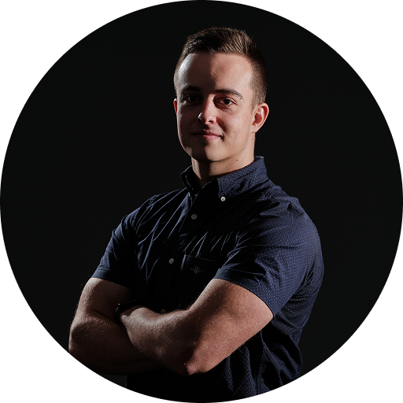

Privat
Neugierig, strukturiert – und gerne mittendrin.
In meiner Freizeit suche ich bewusst den Ausgleich zum Arbeitsalltag. Sport, das Engagement als Kassier im Tennisclub und kleinere Projekte, wie das Organisieren von Events gemeinsam mit Freunden, helfen mir dabei,den Kopf frei zu bekommen.
Lust auf Austausch →